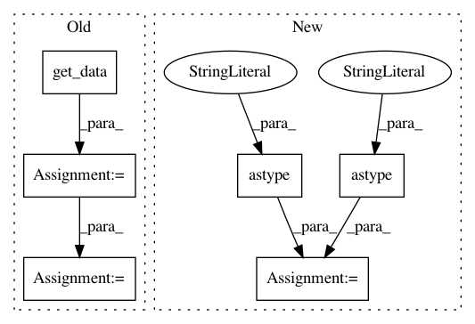

be41bb90371afcc733bdb0bfcf7c8982876fa723,tests/test_reg_utils.py,,test_reorient_img,#,206
Before Change
// Original RAS data
orig_RAS_img = nib.load(img_in_neuro)
orig_RAS_data = orig_RAS_img.get_data()
// Output from LAS input
LAStoRAS_img = nib.load(LAStoRAS_img_out)
LAStoRAS_data = LAStoRAS_img.get_data()
// Output from RAS input
RAStoRAS_img = nib.load(RAStoRAS_img_out)
RAStoRAS_data = RAStoRAS_img.get_data()
// Assert that arrays are equal
check_LAS_input = np.array_equal(LAStoRAS_data, orig_RAS_data)
check_RAS_input = np.array_equal(RAStoRAS_data, orig_RAS_data)
check_both_outputs = np.array_equal(LAStoRAS_data, RAStoRAS_data)
assert check_LAS_input is True
After Change
// Assert that arrays are equal
check_LAS_input = np.allclose(LAStoRAS_img.affine.astype("int"), orig_RAS_img.affine.astype("int"))
check_RAS_input = np.allclose(RAStoRAS_img.affine.astype("int"), orig_RAS_img.affine.astype("int"))
check_both_outputs = np.allclose(LAStoRAS_img.affine.astype("int"), RAStoRAS_img.affine.astype("int"))
assert check_LAS_input is True
assert check_RAS_input is True
In pattern: SUPERPATTERN
Frequency: 3
Non-data size: 6
Instances
Project Name: dPys/PyNets
Commit Name: be41bb90371afcc733bdb0bfcf7c8982876fa723
Time: 2019-08-26
Author: dpisner@utexas.edu
File Name: tests/test_reg_utils.py
Class Name:
Method Name: test_reorient_img
Project Name: dPys/PyNets
Commit Name: be41bb90371afcc733bdb0bfcf7c8982876fa723
Time: 2019-08-26
Author: dpisner@utexas.edu
File Name: tests/test_reg_utils.py
Class Name:
Method Name: test_check_orient_and_dims
Project Name: dPys/PyNets
Commit Name: 449ce796e6f506a28075f16099c986e298141569
Time: 2017-11-12
Author: dpisner@utexas.edu
File Name: pynets/nodemaker.py
Class Name:
Method Name: gen_network_parcels